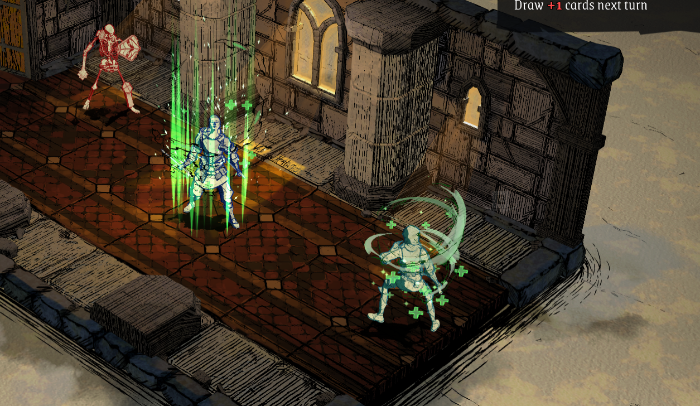
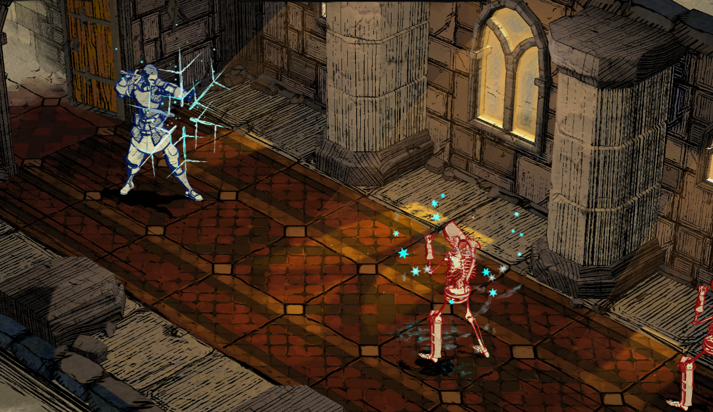

Magic Moves // Visual Effects
Created at Ground Shatter
Made in Unity
Magic Spell Effects for the deck-building Roguelike, Knights in Tight Spaces (developed by Ground Shatter, published by Raw Fury).
Using Unity’s VFX Graph, I created a range of magic spell effects, for attacks, healing and other miscellaneous activities. This was my first project using VFX Graph, which I found to offer so much more than the old Particle system in Unity.
I was able to create “base” effects and turn on and off various parts, and change colours so that we could reuse the same effect over and over. The gif below shows the moves Enrage, Defensive Cleanse, Defuse, Bloody Roar, and Blood Fury which all use the same VFX prefab, in different colours with different settings.
This saved on resources within the game, and also meant that I could spend more time on the set piece visual effects of moves like Hurricane and Poison Cloud, which had much more complex effects.

